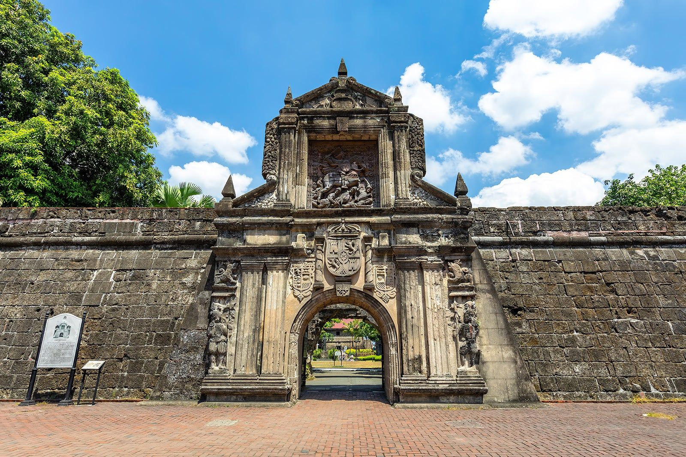
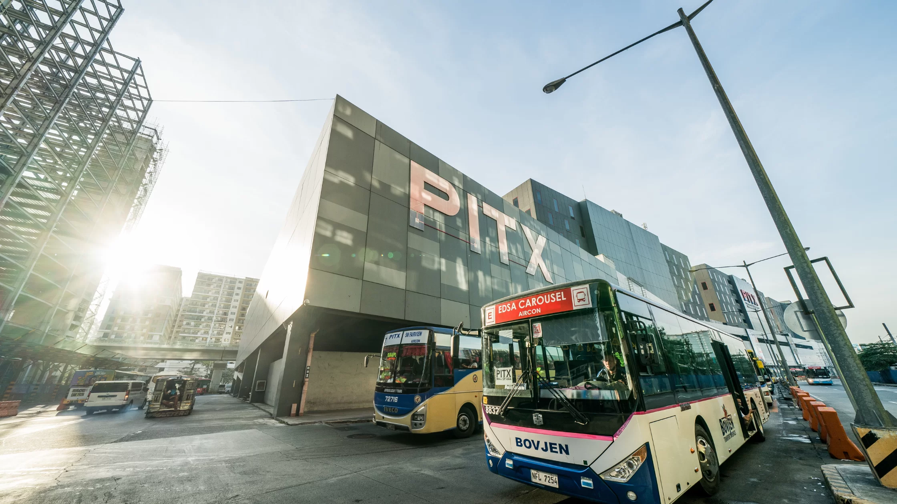
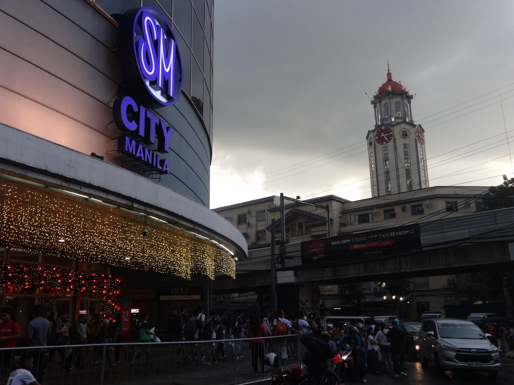

Intramuros
Manila, Philippines
A place I visited multiple times while working on a film project. Rich in historic Spanish-era architecture, it offers a peaceful break from modern city life.

Travelling through selected spots and timeless memories across the Philippines.
I don't go outside much, but when I do, I make every second count.
Manila, Philippines
A place I visited multiple times while working on a film project. Rich in historic Spanish-era architecture, it offers a peaceful break from modern city life.

Parañaque, Philippines
More than just a transit hub, it offers clean, air-conditioned spaces, food options, and a comfortable place to relax and organize before long commutes.

Manila, Philippines
A convenient and familiar mall right in the heart of the city, perfect for grabbing a quick meal, running errands, or hanging out after class.
